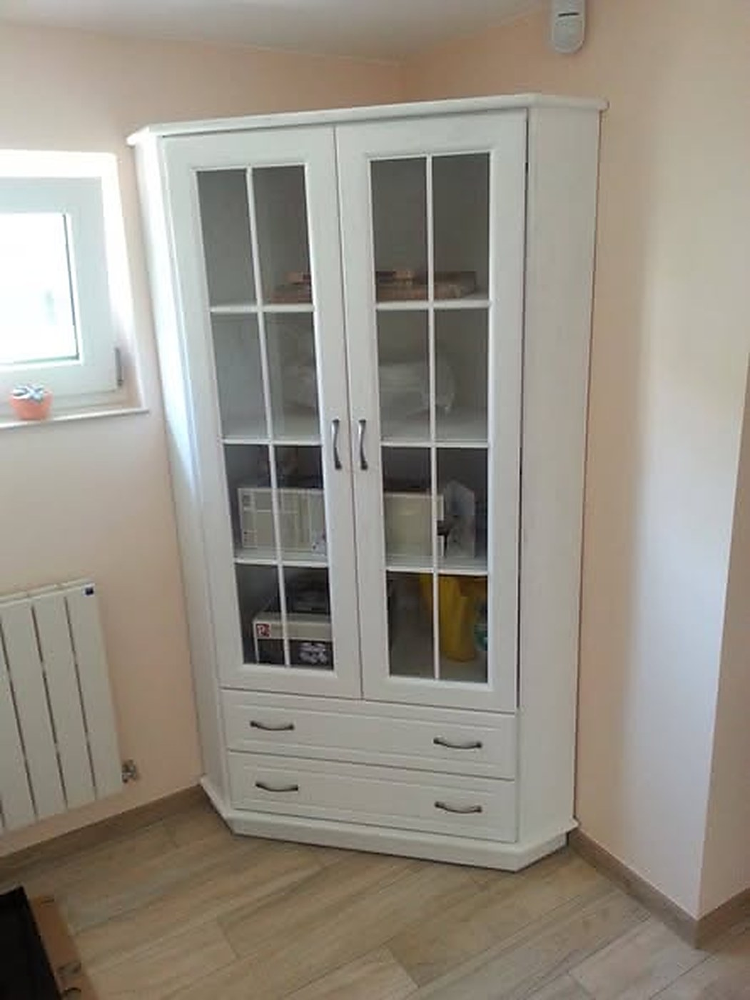
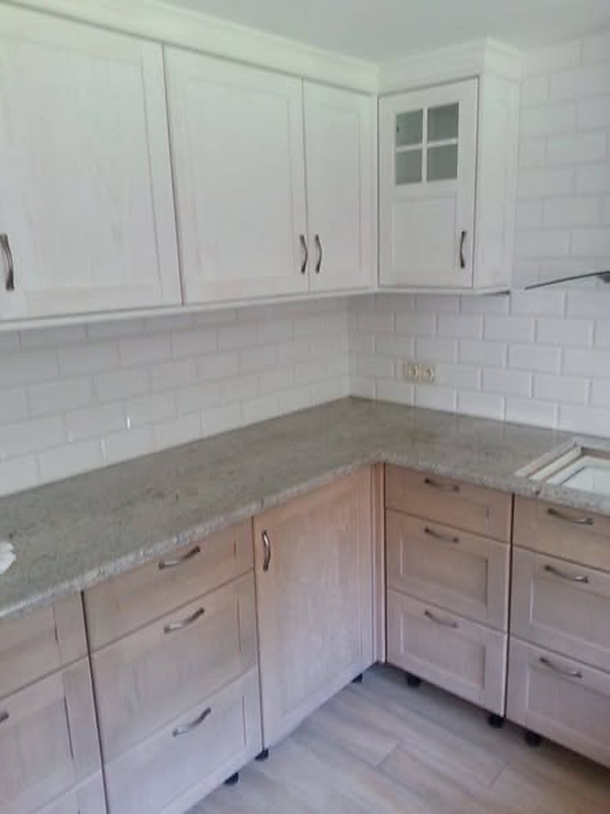

Warsztat przy Wyszogrodzkiej w Płocku. Prowadzę go od 1997 roku - meble na wymiar, schody i drzwi.

Nazywam się Dariusz Maszeńda. Meble robię od 29 lat. Zaczynam od rozmowy u Ciebie w domu: gdzie co ma stać i jak chodzą drzwi obok.
Dopiero potem siadam do projektu. Z warsztatu mebel wyjeżdża, kiedy pasuje co do milimetra - zły wymiar to mój problem, nie Twój.
Bez zobowiązań - opowiedz, co trzeba zrobić, a ja podpowiem jak i wycenię.